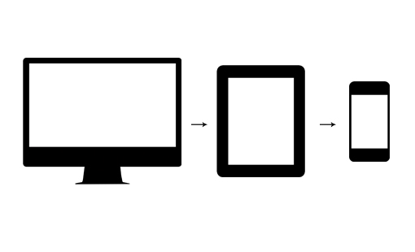

What a responsive site is, and why responsiveness is important?
A responsive website is one that can automatically change it appearance depending on the type of device which it is being viewed on.
In the past, a site was designed primarily for browsing on a desktop or laptop. When viewing on a smaller device such as a phone or tablet, the site would either be too small to navigate or you would have to scroll up or down, left to right to read it. Also, the devices don’t have the same processing resources available so rendering these big sites may take a lot longer. The result is an awkward user experience.
With responsive websites, the site as able to adapt and present the information and navigation in a way that is easy to access and pleasant to use no matter what device the you are using.
Given the rise in the use of mobile devices as a means to access the internet, having responsive websites becomes even more important. In fact, search engines such as Google have now recognised this as the way forward in the future and are using the responsiveness of a site as one of its measures in determining its search ranking.
What mobile first design is, and why it's important?
Initially, webpages were designed for desktop browsing. To add responsiveness, the designer would then have to shoehorn their site into the viewport (screen-size) of the smaller devices.
One of the main issues with this the content and design may be compromised and that certain functions would have to be sacrificed. This approach is referred to as “graceful degradation”.
Turning this approach on it’s head and designing for a mobile platform first is termed “progressive enhancement” and appears to be a growing trend in web design / development.

Using this approach, you design for the mobile environment first, picking your most vital components like the content, navigation, design. The user experience from a mobile perspective is paramount so there is no compromise at this point. Then by using media queries, you can add further enhancements such as additional features and functionality at different screen sizes as the original design is built on.
This is important as it focusses on the mobile user experience right from the outset without compromising the experience of tablet viewers or desktop users. It also results in efficient sites as with each smaller device, unnecessary features are not included.
What frameworks are, and their pros and cons?
A framework is a development tool which provides a platform on which you can build applications and reuse code. With frameworks, there are preloaded features which enables you to perform certain tasks or add functionality without having to code everything from scratch.
The advantages of using frameworks
- Efficiency - tasks can be preformed with pre-built functions, code is stable and has been tested.
- Security - frameworks are developed by a community. If security issues or vulnerabilities identified, these are quickly picked up and resolved.
- Cost - frameworks are often free and can reduce the amount of time taken to develop a site.
- Support - often frameworks come with full documentation and support teams. They also have community forums where you can ask for help or research solutions.
There also are disadvantages to using frameworks.
- You don’t actually learn the language behind the framework, just the framework itself.
- Limitations - frameworks have certain core behaviours which can be modified and idiosyncracies.
- Code is public - which opens it up to malicious attack should a person decide to do so.
What a wireframe is and why we use it?
A wireframe is a basic visual outline of our website design. It gives us a plan of the type of content and information and where it will be displayed on the page. It will also give an idea as to the site will interact with the user.
Here is the basic wireframe from our project. Some elements have changed from the original wireframe to how it appears at the moment.